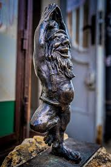

Którym wrocławskim krasnalem jesteś?
Joginek
Chill-master 3000. Ćwiczy asany, pije pokrzywę i medytuje nawet w kolejce do ZUS-u.
Papa Krasnal
Władca krasnali, filozof z Pomarańczowej Alternatywy. Gdyby mógł, zrobiłby doktorat z żartu sytuacyjnego.
Życzliwek

Promyczek miasta. Zna imiona gołębi na rynku i rozsyła dobre wibracje jak Spotify Premium.
Antykwariusz

Cichy mól książkowy. Woli zapach kurzu od zapachu ludzi, ale jak Cię polubi, to przegadasz wieczór.
Syzyfki
Krasnalowy multitasking. Dźwiga kulę i jeszcze dźwiga Twoje nastroje w sesji.
100matolog

Specjalista od zębów i życiowych przypałów. Wierzy, że płyn do płukania ust może uratować świat.